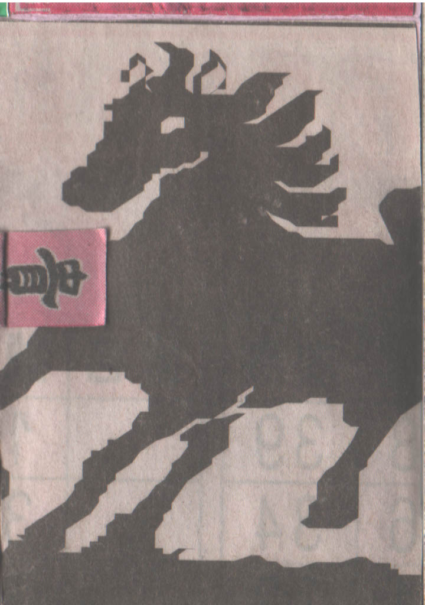
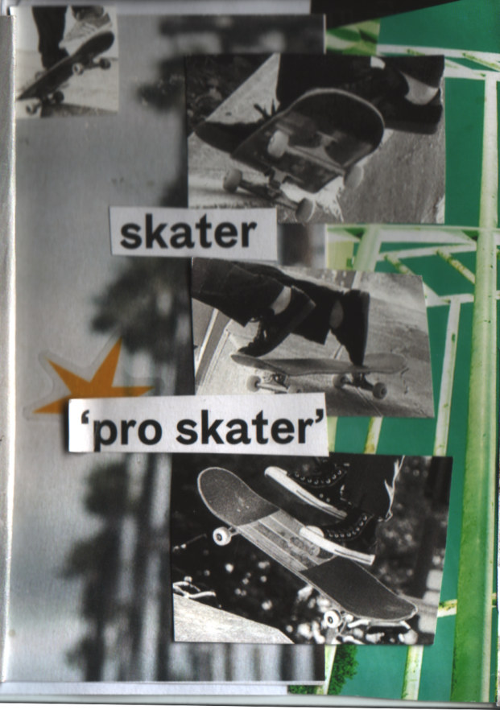
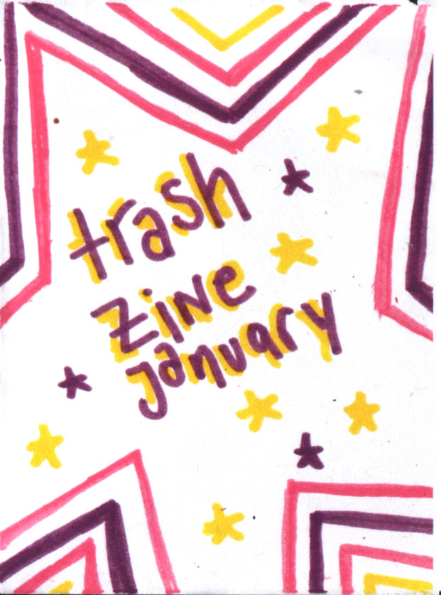

year of the taiwan horse
aus taiwanesischen zeitungen, verpackungen und sonstigem trash.
1 / 8
aus taiwanesischen zeitungen, verpackungen und sonstigem trash.
1 / 8
ein skatemagazin mit ausschließlich männlichen skatern im jahre 2026? i think not. hier gibts nur skater mit weiblichen köpfen
1 / 8
ein trash zine aus dem januar.
1 / 8hi i am kravali and i like to make zines. usually i use trash, wrappers or old magazines and sketch all over them. i want to start collaging zines a little bit more